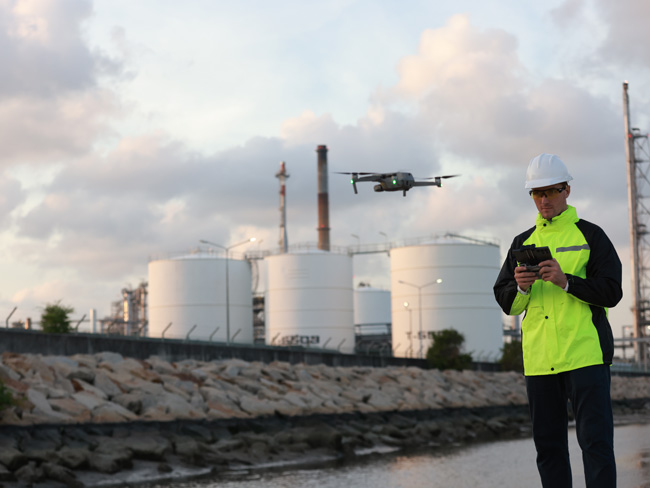

Integrity Engineering
Integrity Engineering in the oil and gas industry plays a critical role in ensuring the safety, reliability, and longevity of infrastructure like pipelines, wells, and pressure systems. The job is all about preventing failures that could lead to environmental disasters, safety hazards, or costly downtime by implementing rigorous inspection, maintenance, and risk management practices. Integrity engineers analyze data from various sources, including sensors and inspection reports, to assess the condition of assets and make informed decisions about repairs or replacements.
Key Responsibilities
Integrity engineers use a variety of tools and techniques to evaluate the condition of assets, including non-destructive testing (NDT) methods and data analysis.
Non-Destructive Testing (NDT) is a set of analysis techniques used to evaluate the properties of a material, component, or system without causing damage. Common NDT methods include ultrasonic testing, radiography, magnetic particle testing, and dye penetrant inspection. These techniques help engineers detect flaws such as cracks, corrosion, or weld defects in pipelines, pressure vessels, and structural components.
By applying NDT, integrity engineers can ensure the continued safety and reliability of critical infrastructure, plan maintenance activities more effectively, and prevent costly failures or accidents.
Maintenance and repair strategies are essential for ensuring that infrastructure remains safe and functional over time. These strategies involve regular inspections, preventive maintenance, and timely repairs to address wear and tear, corrosion, and other forms of deterioration.
Preventive maintenance includes scheduled activities such as lubrication, cleaning, tightening, and replacing parts before failures occur. This proactive approach helps to minimize unexpected breakdowns and extends the lifespan of critical assets.
Corrective maintenance is performed after a fault or failure has been detected. Integrity engineers analyze the root cause of the issue and implement effective repair solutions to restore the asset to its optimal condition.
Modern maintenance strategies often leverage technology, such as condition monitoring sensors and predictive analytics, to detect early signs of problems and optimize maintenance schedules. By combining traditional practices with advanced tools, organizations can reduce downtime, lower costs, and enhance safety.
Integrity engineers work closely with professionals from various fields—such as mechanical, electrical, chemical, and structural engineers, as well as safety officers, project managers, and field technicians—to solve complex engineering challenges.
Effective collaboration ensures that all aspects of asset integrity are considered, from design and construction to operation and maintenance. By sharing expertise and perspectives, teams can identify potential risks early, develop comprehensive solutions, and implement best practices for safety and reliability.
Regular meetings, cross-disciplinary workshops, and the use of collaborative digital platforms help streamline communication and decision-making. This teamwork is especially important when addressing urgent issues, such as unexpected equipment failures or safety incidents, where rapid and coordinated responses are critical.
Ultimately, multidisciplinary collaboration leads to more innovative solutions, improved asset performance, and a stronger safety culture within organizations.
Advanced technologies have revolutionized the way integrity engineers monitor and analyze infrastructure. Real-time monitoring systems, such as Internet of Things (IoT) sensors, collect continuous data on parameters like pressure, temperature, vibration, and corrosion rates. This data is transmitted to centralized platforms for immediate analysis and alerts.

Data analytics and machine learning are increasingly used to process large volumes of monitoring data. These tools help identify patterns, predict potential failures, and optimize maintenance schedules, allowing for proactive decision-making and resource allocation.
Remote monitoring technologies, such as drones and robotic crawlers, enable inspections of hard-to-reach or hazardous areas without putting personnel at risk. High-resolution cameras and thermal imaging provide detailed visual and thermal data for further analysis.
By leveraging these advanced technologies, organizations can enhance the reliability and safety of their assets, reduce downtime, and make more informed, data-driven decisions.
Importance of Integrity Engineering
The role of integrity engineering is vital in preventing failures and ensuring public safety. By proactively identifying and mitigating risks, integrity engineers contribute to the sustainability and resilience of infrastructure systems.